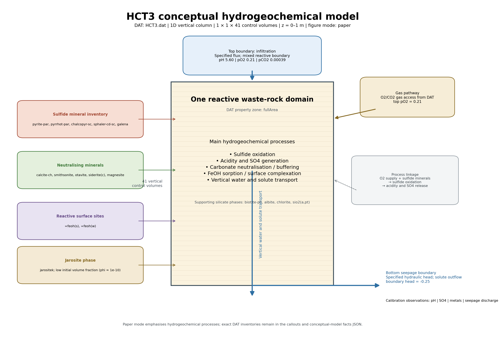
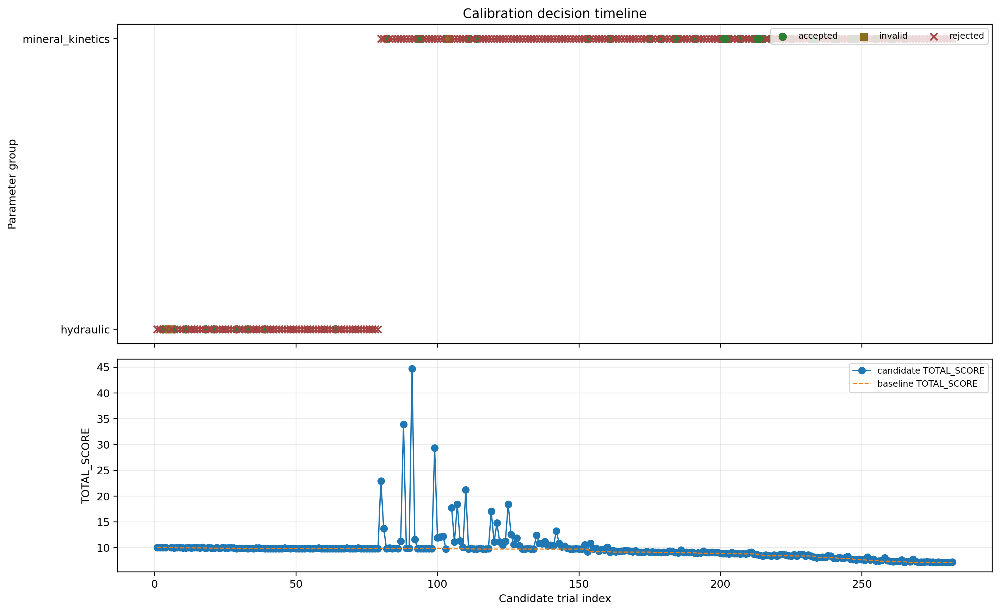
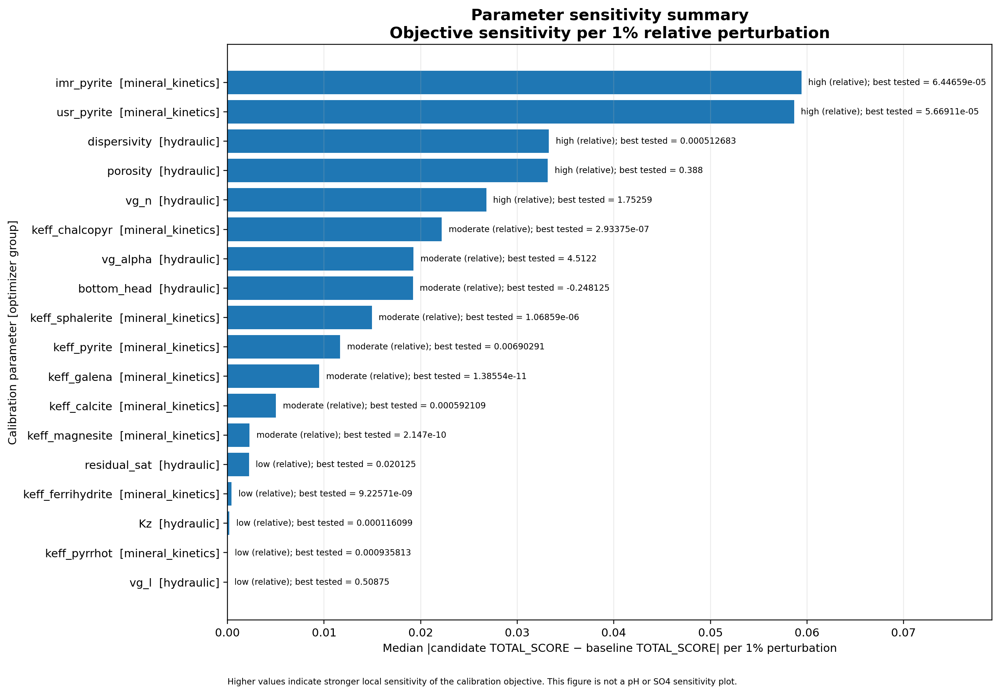

Run status: 245 normal successes, 1 successes with retries, and 1 failed runs. Search: 18 parameters, 281 single-parameter candidates, 0 pair candidates. Step counts: 0.053424: 10, 0.026712: 10, 0.013356: 10, 0.006678: 9, 0.05: 14, 0.025: 13, 0.0125: 12, 0.00625: 11, 0.005: 70, 0.166667: 2, 0.142857: 3, 0.0714286: 2, 0.125: 2, 0.108333: 2, 0.1: 6, 0.15: 2, 0.075: 2, 0.0925898: 2, 0.0907733: 2, 0.0833333: 4, 0.0625: 2, 0.0541667: 3, 0.0270833: 3, 0.0135417: 2, 0.0462949: 2, 0.0453866: 1, 0.0416667: 4, 0.0375: 2, 0.0357143: 2, 0.03125: 2, 0.0231474: 2, 0.0226933: 1, 0.0208333: 4, 0.01875: 2, 0.0178571: 2, 0.015625: 2, 0.0115737: 4, 0.00578686: 2, 0.0113467: 1, 0.0104167: 4, 0.009375: 2, 0.00892857: 2, 0.0078125: 3, 0.00677083: 4, 0.00567333: 2, 0.00850999: 2, 0.00520833: 6, 0.0075: 14, 0.01125: 4, 0.005625: 7.
Candidate-score distribution: minimum 7.1628227, median 9.7679159, mean 9.8752451, maximum 44.692565.
| Parameter | Group | Direction | Step | Candidate TOTAL_SCORE | Candidate − baseline | Accepted |
|---|---|---|---|---|---|---|
keff_calcite | mineral_kinetics | increase | 0.005 | 7.1628227 | -0.00099358553 | False |
imr_pyrite | mineral_kinetics | decrease | 0.005 | 7.1638163 | -0.14519967 | True |
keff_pyrrhot | mineral_kinetics | decrease | 0.005 | 7.1736267 | 0.009810387 | False |
keff_ferrihydrite | mineral_kinetics | decrease | 0.005 | 7.1779979 | 0.014181598 | False |
keff_ferrihydrite | mineral_kinetics | increase | 0.005 | 7.1810968 | 0.01728045 | False |
| Species | Weight | RMSE | Mean observed | Mean modelled | Bias | Status |
|---|---|---|---|---|---|---|
| pH | 2 | 0.79745946 | 5.5285714 | 5.4643244 | -0.064247028 | approximately_unbiased |
| so4-2 | 2 | 0.0012042773 | 0.0046449144 | 0.0036386315 | -0.0010062829 | underpredicted |
| zn+2 | 1 | 0.00021341755 | 0.00022956634 | 0.00020878286 | -2.0783489e-05 | underpredicted |
| cu+2 | 1 | 9.6418242e-07 | 4.1120977e-06 | 4.0450002e-06 | -6.7097543e-08 | approximately_unbiased |
| pb+2 | 1 | 6.2746507e-06 | 1.5301066e-05 | 1.5256912e-05 | -4.4154709e-08 | approximately_unbiased |
| cd+2 | 1 | 2.8121418e-07 | 9.5212678e-07 | 8.9757226e-07 | -5.4554516e-08 | underpredicted |
| al+3 | 1 | 2.7354537e-06 | 1.6901408e-06 | 1.1689856e-06 | -5.2115526e-07 | underpredicted |
| ca+2 | 1 | 0.0013437842 | 0.0034008174 | 0.0027260388 | -0.0006747786 | underpredicted |
The campaign reduced the protected accepted objective from 10 to 7.1638163, an improvement of 28.36%. All included species RMSE values improved relative to the campaign baseline.
There is no reported material charge-balance warning, and the reported initial charge-balance error is low. Nevertheless, the failed run and failed timestep must be traced to the affected candidate and assessed for exclusion, rerun, or numerical-setting refinement. The isolated numerical instability should not be conflated with general optimizer failure.
Latest candidate tested:
keff_sphalerite increase, step 0.005000
Why selected:
Outcome:
Rejected; best parameter set was retained.
Scientific interpretation:
The tested keff_sphalerite increase perturbation did not improve the composite calibration objective.



TOTAL_SCORE. Lower scores indicate closer overall agreement with the calibration targets.Sensitivity ranks the local response of TOTAL_SCORE per one-percent parameter perturbation. It is not a pH or SO4 sensitivity metric. A positive best ΔTOTAL_SCORE means the best tested candidate was still worse than the campaign best configuration.
| Parameter | Process family | Relative class | Median objective sensitivity / 1% | Best ΔTOTAL_SCORE |
|---|---|---|---|---|
imr_pyrite | Sulfide oxidation | high (relative) | 0.059422 | -0.1452 |
usr_pyrite | Sulfide oxidation | high (relative) | 0.0586579 | 0.0870994 |
dispersivity | Hydraulic transport | high (relative) | 0.0332651 | 0.00664984 |
porosity | Hydraulic transport | high (relative) | 0.03315 | -0.00225621 |
vg_n | Hydraulic transport | high (relative) | 0.0267942 | 0.000753442 |
keff_chalcopyr | Mineral kinetics | moderate (relative) | 0.0221766 | 0.226799 |
vg_alpha | Hydraulic transport | moderate (relative) | 0.0192526 | -0.00103753 |
bottom_head | Hydraulic transport | moderate (relative) | 0.019195 | 0.00418085 |
keff_sphalerite | Mineral kinetics | moderate (relative) | 0.0149445 | 0.0846734 |
keff_pyrite | Sulfide oxidation | moderate (relative) | 0.0116727 | 0.0232354 |
| Parameter | Group | Trials (scored / invalid / unscored) | Median objective sensitivity / 1% | Class | Strongest direction | Best direction | Best ΔTOTAL_SCORE | Outcome |
|---|---|---|---|---|---|---|---|---|
| imr_pyrite | mineral_kinetics | 28 (27 / 1 / 0) | 0.059422 | high (relative) | decrease | decrease | -0.1452 | accepted_improvement |
| usr_pyrite | mineral_kinetics | 19 (19 / 0 / 0) | 0.0586579 | high (relative) | increase | increase | 0.0870994 | accepted_improvement |
| dispersivity | hydraulic | 15 (14 / 1 / 0) | 0.0332651 | high (relative) | increase | decrease | 0.00664984 | accepted_improvement |
| porosity | hydraulic | 12 (12 / 0 / 0) | 0.03315 | high (relative) | decrease | decrease | -0.00225621 | accepted_improvement |
| vg_n | hydraulic | 12 (12 / 0 / 0) | 0.0267942 | high (relative) | increase | decrease | 0.000753442 | accepted_improvement |
| keff_chalcopyr | mineral_kinetics | 30 (30 / 0 / 0) | 0.0221766 | moderate (relative) | increase | decrease | 0.226799 | accepted_improvement |
| vg_alpha | hydraulic | 9 (9 / 0 / 0) | 0.0192526 | moderate (relative) | increase | increase | -0.00103753 | accepted_improvement |
| bottom_head | hydraulic | 8 (8 / 0 / 0) | 0.019195 | moderate (relative) | decrease | increase | 0.00418085 | no_accepted_improvement |
| keff_sphalerite | mineral_kinetics | 11 (11 / 0 / 0) | 0.0149445 | moderate (relative) | decrease | increase | 0.0846734 | no_accepted_improvement |
| keff_pyrite | mineral_kinetics | 25 (25 / 0 / 0) | 0.0116727 | moderate (relative) | decrease | increase | 0.0232354 | accepted_improvement |
| keff_galena | mineral_kinetics | 10 (10 / 0 / 0) | 0.00948833 | moderate (relative) | decrease | decrease | 0.0247251 | no_accepted_improvement |
| keff_calcite | mineral_kinetics | 37 (37 / 0 / 0) | 0.00500987 | moderate (relative) | decrease | increase | -0.000993586 | accepted_improvement |
| keff_magnesite | mineral_kinetics | 16 (16 / 0 / 0) | 0.0022848 | moderate (relative) | decrease | decrease | 0.0269706 | accepted_improvement |
| residual_sat | hydraulic | 4 (4 / 0 / 0) | 0.00221798 | low (relative) | increase | increase | 7.77281e-05 | no_accepted_improvement |
| keff_ferrihydrite | mineral_kinetics | 13 (13 / 0 / 0) | 0.000429791 | low (relative) | decrease | decrease | 0.0141816 | accepted_improvement |
| Kz | hydraulic | 10 (10 / 0 / 0) | 0.000178172 | low (relative) | decrease | decrease | -1.7969e-06 | no_accepted_improvement |
| keff_pyrrhot | mineral_kinetics | 14 (14 / 0 / 0) | 2.97074e-05 | low (relative) | increase | decrease | 0.00981039 | accepted_improvement |
| vg_l | hydraulic | 9 (9 / 0 / 0) | 2.06833e-06 | low (relative) | increase | decrease | -4.38502e-09 | accepted_improvement |
| Calibration group | Parameters | Trials | Best candidate TOTAL_SCORE | Best ΔTOTAL_SCORE | Median candidate-minus-baseline | Accepted improvements |
|---|---|---|---|---|---|---|
| mineral_kinetics | 10 | 203 (202 / 1 / 0) | 7.16282 | -0.000993586 | 0.0941379 | 37 |
| hydraulic | 8 | 79 (78 / 1 / 0) | 9.83349 | -1.7969e-06 | 0.00689411 | 9 |
| Parameter | Calibration group | Process family | Hydrogeochemical process | Baseline | Best tested | Sensitivity class |
|---|---|---|---|---|---|---|
| imr_pyrite | mineral_kinetics | Sulfide oxidation | Pyrite oxidation, acid generation and sulfate release | 7.35e-05 | 6.44659e-05 | high (relative) |
| usr_pyrite | mineral_kinetics | Sulfide oxidation | Pyrite oxidation, acid generation and sulfate release | 5.71429e-05 | 5.66911e-05 | high (relative) |
| dispersivity | hydraulic | Hydraulic transport | Water residence time, gas access, solute transport and dilution | 0.0005 | 0.000512683 | high (relative) |
| porosity | hydraulic | Hydraulic transport | Water residence time, gas access, solute transport and dilution | 0.4 | 0.388 | high (relative) |
| vg_n | hydraulic | Hydraulic transport | Water residence time, gas access, solute transport and dilution | 1.7 | 1.75259 | high (relative) |
| keff_chalcopyr | mineral_kinetics | Mineral kinetics | Mineral dissolution/precipitation reaction rate | 2.2e-07 | 2.93375e-07 | moderate (relative) |
| vg_alpha | hydraulic | Hydraulic transport | Water residence time, gas access, solute transport and dilution | 4.5 | 4.5122 | moderate (relative) |
| bottom_head | hydraulic | Hydraulic transport | Water residence time, gas access, solute transport and dilution | -0.25 | -0.248125 | moderate (relative) |
| keff_sphalerite | mineral_kinetics | Mineral kinetics | Mineral dissolution/precipitation reaction rate | 9.52381e-07 | 1.06859e-06 | moderate (relative) |
| keff_pyrite | mineral_kinetics | Sulfide oxidation | Pyrite oxidation, acid generation and sulfate release | 0.00453453 | 0.00690291 | moderate (relative) |
| keff_galena | mineral_kinetics | Mineral kinetics | Mineral dissolution/precipitation reaction rate | 1.6e-11 | 1.38554e-11 | moderate (relative) |
| keff_calcite | mineral_kinetics | Carbonate neutralization | Mineral dissolution and acid neutralization | 0.000142857 | 0.000592109 | moderate (relative) |
| keff_magnesite | mineral_kinetics | Carbonate neutralization | Mineral dissolution and acid neutralization | 1.3286e-10 | 2.147e-10 | moderate (relative) |
| residual_sat | hydraulic | Hydraulic transport | Water residence time, gas access, solute transport and dilution | 0.02 | 0.020125 | low (relative) |
| keff_ferrihydrite | mineral_kinetics | Fe hydroxide sorption | Surface complexation, solute retention and reactive surface availability | 1e-09 | 9.22571e-09 | low (relative) |
| Kz | hydraulic | Hydraulic transport | Water residence time, gas access, solute transport and dilution | 0.000116335 | 0.000116099 | low (relative) |
| keff_pyrrhot | mineral_kinetics | Mineral kinetics | Mineral dissolution/precipitation reaction rate | 1.05e-05 | 0.000935813 | low (relative) |
| vg_l | hydraulic | Hydraulic transport | Water residence time, gas access, solute transport and dilution | 0.5 | 0.50875 | low (relative) |
V15.3.1 reconstructs candidate-selection rationale from V14 decision logs, optimizer state, transaction manifests, and GPT configuration. It is read-only and does not alter calibration state.
| # | Parameter | Direction | Step | Candidate TOTAL_SCORE | Decision | Why selected |
|---|---|---|---|---|---|---|
| 271 | keff_calcite | decrease | 0.005000 | 7.249928 | reject |
|
| 272 | usr_pyrite | increase | 0.005000 | 7.250916 | reject |
|
| 273 | usr_pyrite | decrease | 0.005000 | 7.303239 | reject |
|
| 274 | keff_magnesite | increase | 0.005000 | 7.203240 | reject |
|
| 275 | keff_magnesite | decrease | 0.005000 | 7.190787 | reject |
|
| 276 | keff_pyrite | increase | 0.005000 | 7.187052 | reject |
|
| 277 | keff_pyrite | decrease | 0.005000 | 7.220314 | reject |
|
| 278 | keff_ferrihydrite | increase | 0.005000 | 7.181097 | reject |
|
| 279 | keff_ferrihydrite | decrease | 0.005000 | 7.177998 | reject |
|
| 280 | keff_pyrrhot | increase | 0.005000 | 7.185948 | reject |
|
| 281 | keff_pyrrhot | decrease | 0.005000 | 7.173627 | reject |
|
| 282 | keff_sphalerite | increase | 0.005000 | 7.248490 | reject |
|
Full explainability outputs: explainability/candidate_explanation.xlsx, explainability/explainability_summary.xlsx, and per-candidate JSON files.